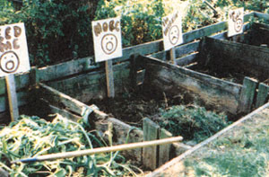

Spring Garden Special
Dos and don'ts of composting... and building a better bin
This planet has been making dirt for a long time: decomposing carbon-based organic matter through a series of complex chemical and biological processes. Carbon-rich organic matter interacts chemically with nitrogen in a moist, aerated environment and is further broken down with the help of biological agents like fungi, worms, bacteria and other micro-organisms. If we want to re-create the kind of soft, fertile soil we find under the leaf carpet of a forest rather than the gooey muck of a marsh, we need to think of a compost heap as a living thing that requires the essentials of all living things: air, food, and water in a balanced combination.
For a stretch last summer, after local ordinances barred garden waste from landfills, I gave my neighbors an open invitation to feed my compost bins. The result was massive indigestion. Like grandparents spoiling the kids, they loaded all kinds of food into the bottomless pits without thought for the consequences. Grass clippings were the worst. Mountains of Kentucky Blue Grass were reduced to Okeefenokee swamp, stinking and oozing in black-green puddles. Meat and cheese scraps made my compost smell like a garbage dump. Woody, heavy-stemmed plants extended the decay cycle enough that I couldn't predict a steady harvest of soil supplement. It appeared, as the marriage counselors say, that we had a failure to communicate-on two fronts: between me and the compost bins, and me and the neighbors.
The first failure was my own. I needed to listen more and pay more attention to how each pit was doing. I began to check more frequently for moisture, watering when necessary. I layered with dirt or previously harvested compost.. . and I studied compost theory a bit ...soon discovering that I had basically starved my bins of their three absolutely essential nutrients.
My compost bins smelled like a swamp last summer because of a lack of air in the compressed pile of glass clippings. The grass was decomposing all right, anaerobically-without oxygen, septic tank style.
The composting microbes that make for clean-smelling, aerobic decomposition need air and lots of it. That's why we layer compost ingredients-to create breathing spaces in the pile and then "tease it," as a beautician would say, to keep the layers from matting down. I find, after ten years of trial and error, that the pile decomposes more quickly when I turn it over or pitch it into adjacent bins once a week.
Compost microbes thrive in a wet environment. If too dry, the decomposition process will take forever (Did you ever notice that dinosaur bones are found in deserts?). If too wet, the soggy ingredients of your pile will seal off air and you may notice a distinctive marsh odor. If you can step on a handful of compost and squeeze out a drop or two of water, it's about right. If you have a lot of dry material to add at once, you will want to provide moisture as you layer in one of the following ways:
Use a hose. Toss in juicy kitchen scraps. Add fresh "greens." Spread a layer of damp compostinprogress from other bins.
If you're having a particularly wet spell, you might want to cover your compost with a tarp to keep it from getting too wet and to prevent the nutrients from leaching out. By the way, speaking of water-borne nutrients, some people make a kind of tea from compost and water (equal parts water and compost) to perk up house plants and transplants.
Compost microbes prefer two kinds of food: carbon-based and nitrogen-based, sometimes called "browns" and "greens," respectively. General wisdom on the subject says that compost heaps should ideally have a 30:1 ratio of carbon to nitrogen (this can be as low as 10:1 if you turn the pile frequently).
Following are sample menus.
Brown (Carbon):
Dry leaves;
Straw;
Dry woody plants/stems;
Sawdust (not front treated wood );
Shredded/chipped wood; and
Seaweed.
Green (Nitrogen):
Fresh grass clippings;
Weeds/trimmings;
Kitchen scraps;
Fresh manure; and Coffee grounds, tea (filters and bags, too).
But here's the problem: During fall and spring cleanup, you have more brown than you can handle; while during late spring and summer, you're surrounded by green.
Solutions:
Buy straw.
Bag leaves for later use.
Dry out yard-trim before adding it to the pile.
Or you can do what I do, which is to layer twelve inches of green with one inch of top soil/compost and "toss" once a week. Even though I'm departing from recommended ingredients and proportions, I get good compost in a regular fashion all summer long, and that's what counts.
At the risk of putting you off a favorite Italian dish, I like to think of compost heaps as a giant vegetarian lasagna: layer upon layer of alternating brown, green, black/brown, green, black. The "black" is soil or mature compost. It isn't absolutely necessary to add soil to your compost heap; however, it can speed up the process. Like the old chuck wagon cooks who always kept some starter dough on hand to add some leaven to the next batch of biscuits, I pile harvested compost next to the pits so I can easily throw a few shovels full on top of each layer. This helps compact springy matter, adds moisture, and infuses bacteria and other microbes to hasten the chemical/biological process. If I'm feeling stingy about the amount of compost I'm using, I remind myself that I'll be getting it back soon.
Why layer in the first place, if you're only going to scramble and mix a compost pile shortly thereafter? Proportions. It's important to get the right combination of brown/green/black and to let them "work" for a while before you attack the ingredients like an energetic salad chef.
Every couple of weeks or so I toss the contents of the bins around from one to another. I don't sequence my bins-I want a little old and a little new to be mixed in to every bin of working material. Once I toss, I ignore it and let it work until the next toss session. (Remember: organic processes are not so orderly.)
I find that it takes around six weeks to get finished compost with my system. Sometimes I'll harvest compost before it's completely finished and rototill it into the garden. It can finish the job in place. Once the ground freezes solid in our Michigan winters, active composting seems to stop. Our family keeps a plastic gallon beverage container with a sealing lid next to the sink for kitchen scraps. We regularly dump them into the bins, where they promptly freeze. Then, come spring, the winter waste thaws and quickly breaks down. Some people we know feed kitchen waste to worms kept in their basement. Worm castings from vermicomposting make for very rich planting soil.
Grass clippings need to be dried before going into the pit, or at least layered no more than three inches deep to avoid swamp effect. If you ever get a chance to add horse, sheep, or cow manure, do it. Be sure to give it a chance to work for a while so it isn't too hot for plants in the garden. Manure, especially when fresh, is nitrogen rich. Color it green. There's the old saying: The bigger they are, the harder they fall. In composting, it seems, the larger the chunks, the longer they take to breakdown. So my neighbor chops up leftover zucchini, cucumbers, pumpkins, and squash with a shovel before stirring them into the microbial stew.
Since the back end of our yard drops about four feet at a 45 degree angle, I was able to build ground-level bins from recycled redwood planks right into the front of the slope. I squared off the bottom of the pitch, snugged four posts up to the facing edge at four-foot intervals. I nailed two planks at the top of the front wall. Then I took the dirt cut from the base of the incline and backfilled the front planks. I planted four more posts four feet back from the front posts. Then it was simply a matter of filling in the frame with boards. I left three-inch gaps between the planks to allow for air.
As you can see by the design, three sides of the bins are exposed, but the better part of aeration really comes with tossing and mixing. The topography of my yard suggested this structure. If your yard is flat, why not make standing bins with detachable front doors (as one of my neighbors did after he caught onto composting)? You could then use a sit-down mower or shredder to blow directly in and still have easy access for harvesting. People who use top loading, stand-up bins have to lift raw materials into their piles at the beginning of the process. My setup makes dumping the fresh materials easier, though I have to climb in to aerate and lift out to harvest. Sooner or later you have to lift.
As old as the dirt itself is the story of nature's transformation from green to brown to fertile soil. We have to learn the story, and then recreate the process in a small space in our own backyard. We have to communicate with our neighbors. And, especially, we have to communicate with our compost heap: the living organism that needs the food, air, and water we bring to it.
Sawdust from treated wood. The chemicals used in the various processes might get into your food chain.
Grass clippings sprayed with pesticide. It's probably better to let the grass dry and mulch it into the lawn to try to keep the pesticides as much where they were intended as possible.
Thugs such as ivy, peppermint, weeds gone to seed (hay has a lot of seeds, by the way), and dandelions have a way of coming back. Unless the compost pile gets hot enough (150-160 degrees Fahrenheit) or you are willing to pasteurize the compost in your oven (180 degrees for 30 minutes), you may be cultivating the very plants you are trying to get rid of. Every year we get a surprise volunteer from my neighbor's garden-a cucumber vine in the day lilies, a sunflower next to the acanthus, and the perennial cherry tomatoes wherever they please. I guess my pile doesn't get hot enough or some seeds manage to avoid the heat. In any case, I find it easier to exclude some plants from the recycling process.
Animal feces, rich as it is for your garden, may present odor and disease transmission problems.
The generic category of "protein" (meat, bones, grease, and dairy products) will cause odors, attract pests, and, in the case of grease, block air flow. One exception I make to this rule is the use of fish offal. Maybe I still remember childhood stories of Indians putting a fish in each mound of planted corn. In any case, I'm not that great a fisherman, so we're not talking about great quantities.
Wood chips from home shredders or tree trimming services can take a long time to breakdown. A layer or so in the compost pile seems to be tolerated all right. I like to think our garden can always stand a little fiber in its diet. But to paraphrase the old joke, What do you call a boomerang that won't come back? (answer: a stick); I ask, What do you call sticks that won't decompose? Answer: mulch.
I find it easier to shred branches and twigs onto selected garden spots for mulch rather than add them to compost mix where they tend to prolong the process of decomposition.
Pine needles, pine cones and evergreen shrub trimmings do not compost readily and can contribute to acidity in the soil.
|
Pitfalls: Woody, heavy plants extend decay cycles. |
Monitor your pits' air, water, and food levels... not too much... not too little. |
Leave gaps between planks for aerating your bins. |
|
 |
|
|